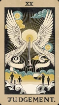

The Justiciar Pathway centers on defending Order through laws, judgments, and punishment. Its higher Sequences can negate supernatural powers, impose mystical Rules and Verdicts, and enforce order over chaos; its characteristics are stated to originate with the Outer Deity Son of Chaos, with The Anarchy as its Above the Sequence and Nation of Disorder as its corresponding Sefirah.
Pathway progression and late-sequence details contain major story spoilers.Overview
The Justiciar Pathway centers on defending Order through laws, judgments, and punishment. Its higher Sequences can negate supernatural powers, impose mystical Rules and Verdicts, and enforce order over chaos; its characteristics are stated to originate with the Outer Deity Son of Chaos, with The Anarchy as its Above the Sequence and Nation of Disorder as its corresponding Sefirah.
Paraphrased from the Fandom pathway article..
Complete wiki information
Full main-article information imported from the Justiciar Pathway wiki article. Existing archive pathway details above are preserved.
All living beings are equal before the law.
Overview
The Justiciar Pathway is about defending Order. It is strong at setting laws and punishing lawbreakers. They can set up rules that will inflict punishments if broken, directly attack minds and souls, recognize people supernaturally, detect abnormalities, and use all kinds of weapons and explosives.
At High-Sequences, they can negate other Beyonder powers and supernatural phenomena, and enforce order upon chaos. They can also set Verdicts and Rules and any sentence they speak in mystical language can be set as a rule for their targets to follow.
The Beyonder Characteristics of this pathway originated from the Outer Deity Son of Chaos.[2]
The Above the Sequence of the Justiciar Pathway is The Anarchy, and the corresponding Sefirah is the Nation of Disorder.
Sequence Levels
Pathway Symbol
The official symbol of the Justiciar Pathway.[3]
Corresponding Tarot Card

The corresponding tarot card of the Justiciar Pathway is Judgment.[4]
Judgment (XX), or in some decks spelled Judgement, is the twentieth card of the Major Arcana. Its order is significant: it’s the last card before the completion of the Major Arcana’s numerical cycle. This card is referred to as a time of resurrection and awakening, a time when a period of our life comes to an absolute end making way for dynamic new beginnings.[5][6]
Corresponding Ingredients
Browse the local Justiciar Pathway ingredient archive →
Mythical Creature Form
A giant Brass Pillar with rules written on it.[7]
Neighboring and Compatible Pathways
Neighboring Pathways to the Justiciar Pathway include:
- Other Pathways under The Anarchy:
- Pathways under the Uncertain Mist:

Compatible Pathways to the Justiciar Pathway include, but might not be limited to, the following:
- Pathways under the Supernova Dominator:

- Pathways under the High-Dimensional Overseer:

- Pathways under the Primordial Hunger:


Non-Adjacent Pathways with Hidden Neighbouring Relationship to the Justiciar Pathway include, but might not be limited to, the following:
- Pathways under the Lord of Mysteries:
Sequence progression
Sequence titles are retained from the archive; key ability notes are concise paraphrases of the linked source material.
| Seq. | Name | Key abilities |
|---|---|---|
| 9 | Arbiter | Convincing Authority charm makes others more likely to believe and obey commands. |
| 8 | Sheriff | Designates a small-town Jurisdiction, recognizes people and routes supernaturally, detects abnormalities, and gains weapon proficiency. |
| 7 | Interrogator | Summons contact-bound illusory torture devices and psychic attacks that damage Spirit Bodies, compel confession, and improve demolition skills. |
| 6 | Judge | Uses mystical language to impose area Rules and Verdicts such as Prohibition, Imprison, Confinement, secrecy, Death, Flog, and Exile. |
| 5 | Disciplinary Paladin | Selects targets for Punishment, restricting movement and enhancing influence and offense; Authority strengthens Prohibition and Death. |
| 4 | Imperative Mage | Sets time-limited Imperatives, creates rule-based Contracts, and gains Verdicts including Deprivation, Exile, Execution, Confinement, and Intimidation. |
| 3 | Chaos Hunter | Applies Balancing, senses and tracks Disorder, and delivers unavoidable Sword of Judgment; earlier Imperatives and Verdicts strengthen. |
| 2 | Balancer | Divides battlefields to enforce Balance, equalizes opponents briefly, senses Disorder, and enacts Laws and Decrees. |
| 1 | Hand of Order | Acts as an Order Proxy, creating or temporarily modifying battlefield-to-nation-scale Rules and sensing or quelling Disorder. |
| 0 | Justiciar | Commands Order over Rules, Laws, and Principles; establishes permanent publicized Rules, removes non-underlying Rules, and enables complex resurrection methods. |
Pathway themes & abilities
Its recurring toolkit combines Authority and jurisdiction with supernatural recognition and detection, mind-and-soul attacks, weapon use, rule-setting, Verdicts, Punishment, ability Deprivation, Balance, and broader Law-and-Order control. The linked abilities article distinguishes Order, Disorder, Balance, Judgment, Laws, Principles, and Rules; higher levels progressively make these effects more area-wide, binding, and able to suppress other powers.
Sequence-specific highlights are shown in the progression table above.
High-sequence abilities
The upper Sequences change the pathway from a specialist discipline into a domain of angelic and divine authority. The highlights below summarize the progression from Sequence 4 upward; details contain major spoilers.
Sequences 4–3
- Sequence 4 — Imperative Mage: Sets time-limited Imperatives, creates rule-based Contracts, and gains Verdicts including Deprivation, Exile, Execution, Confinement, and Intimidation.
- Sequence 3 — Chaos Hunter: Applies Balancing, senses and tracks Disorder, and delivers unavoidable Sword of Judgment; earlier Imperatives and Verdicts strengthen.
Sequences 2–1
- Sequence 2 — Balancer: Divides battlefields to enforce Balance, equalizes opponents briefly, senses Disorder, and enacts Laws and Decrees.
- Sequence 1 — Hand of Order: Acts as an Order Proxy, creating or temporarily modifying battlefield-to-nation-scale Rules and sensing or quelling Disorder.
Sequence 0
- Sequence 0 — Justiciar: Commands Order over Rules, Laws, and Principles; establishes permanent publicized Rules, removes non-underlying Rules, and enables complex resurrection methods.
Sequence highlights are paraphrased from the Lord of the Mysteries Wiki pathway article.
Novel lore & story appearances
In the Fourth Epoch, Trunsoest and Alista Tudor helped overthrow Solomon and jointly ruled the Northern Continent through the Tudor–Trunsoest United Empire. When Solomon’s resurrection threatened them, the Six Gods backed Trunsoest’s switch from the Black Emperor pathway to Sequence 0 Justiciar; Alista instead became the Blood Emperor, splitting their empire into rival states. Trunsoest’s empire drew support from the orthodox gods and, through his marriage to Auernia, the Sanguines, but he fell in the War of the Four Emperors. The Justiciar Uniqueness later became the corrupted Trunsoest Brass Book, central to Klein’s late-series confrontations
Story connections
- A god-backed succession and fracture: Trunsoest was chosen over Alista for the Justiciar ascension; the United Empire split as Alista pursued the Red Priest pathway
- The Night Emperor’s coalition and aftermath: Trunsoest’s empire relied on the orthodox gods and Sanguines; after his fall, the gods abandoned the Trunsoest Family and the Northern Continent divided among successor powers
- A legacy artifact in Klein’s endgame: The Justiciar Uniqueness, corrupted by the Nation of Disorder, became the Brass Book; Klein sealed it and it later figured in his final confrontation with Amon
Figures to know
- Trunsoest (Night Emperor)Former Black Emperor pathway Beyonder who became Sequence 0 Justiciar and ruled the Trunsoest Empire
- Alista Tudor (Blood Emperor)Trunsoest’s co-ruler before their political split; his move to Red Priest helped end their joint empire
- Klein MorettiSealed the Brass Book and later used it in the confrontation with Amon
Major story spoilers. Lore is paraphrased;.
Associated figures
Selected figures listed in the source material:
- Celestial Thearch
- Night Emperor
- Elf King Soniathrym (Soniathrym)
- Celestial Worthy of Heaven and Earth for Blessings
- Son of Chaos
- Trunsoest
Showing 6 of 10 names listed in the source; this is not an exhaustive roster.